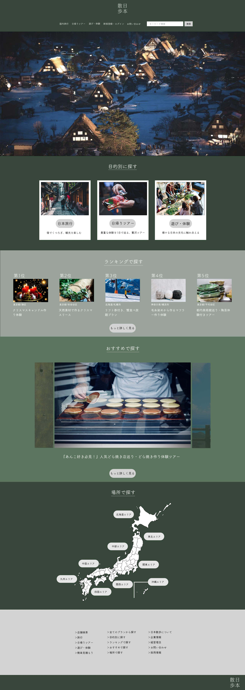
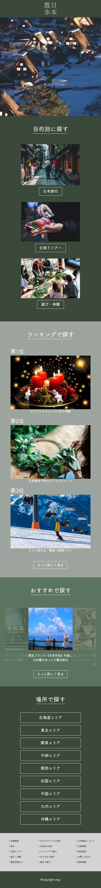

日本散歩
・国内専門の旅行代理店
・「日本を感じて、知って、味わって、もっと身近に」がコンセプト
・ターゲットは、20代〜40代の日本文化に興味がある方や、
休日に日帰りでお出かけしたい方、小さいお子様とのお出かけ先を探している方。
・旅行・日帰りツアー・体験の３つから探す事ができる。
・旅行は１泊から長期滞在のプランまで幅広く提案をしており、
日帰りツアーでは充実した1日が過ごせる様々なイベントを用意、
当日予約も可能な体験では旅先での思い出作りや、
親子で楽しむ体験教室が人気となっている。
・日本文化を身近に感じてもらえる工芸作り体験や、クリスマス・
バレンタインなど季節行事に合わせたイベントもある。
- 意識した点
-
国内専門の会社という特徴から、和の雰囲気を感じる緑で統一しました。
またプランの数が多く検索が複雑になりやすいため、
探し方を「目的・ランキング・おすすめ・地図」の４パターンに分けて提案することで、
お客様の目的や予定、好みに合わせて調べやすくなるようにしました。
ロゴマークは身近に日本文化を感じてほしいというコンセプトから、
主張しすぎない太さのフォントにし文字間を調節してまとまりを作り、
馴染み深い印象のデザインにしました。 - 使用スキル
- HTML/css/JavaScript/illustrator/Photoshop
- URL
- 日本散歩ウェブサイト

